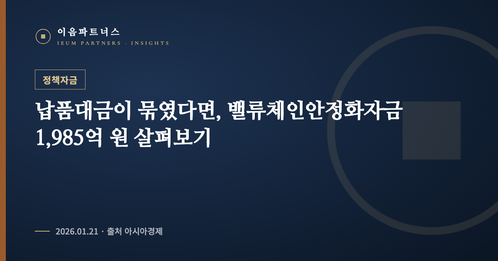

납품대금이 묶였다면, 밸류체인안정화자금 1,985억 원 살펴보기

큰 거래처에서 주문은 받았는데 원자재를 살 돈이 없거나, 물건은 넘겼는데 대금이 몇 달 뒤에 들어오는 상황은 제조·납품 기업이라면 한 번쯤 겪습니다. 중진공은 2026년 1월 21일부터 이런 단기 자금 공백을 메우는 밸류체인안정화자금 신청을 받기 시작했습니다. 이 글에서는 두 가지 세부 자금의 조건과 우리 회사에 맞는 쪽을 고르는 방법을 정리합니다.
2026년 공급 규모는 전년과 같은 1,985억 원으로, 동반성장네트워크론 1,395억 원과 매출채권팩토링 590억 원으로 나뉩니다(아시아경제). 거래 구조에 따라 맞는 쪽이 달라지니, 판단이 어렵다면 카카오톡 채널 이음파트너스에서 함께 정리해 볼 수 있습니다.
두 자금은 어떻게 다른가
① 동반성장네트워크론: 발주서로 생산자금을
중진공과 협약을 맺은 발주기업이 거래하는 중소기업을 추천하면, 중진공이 발주서를 근거로 생산자금을 빌려주는 방식입니다. 납품 대금은 중진공이 발주기업에서 직접 받아 대출 상환에 씁니다. 2026년에는 발주기업의 추천 한도가 대기업 200억 원에서 250억 원으로, 중견기업 150억 원에서 200억 원으로 늘었습니다.
② 매출채권팩토링: 받을 돈을 미리 현금으로
판매기업이 가진 매출채권(물건을 팔고 아직 받지 못한 돈을 받을 권리)을 중진공이 상환청구권 없이 사들이는 방식입니다. 상환청구권이 없다는 것은 구매기업이 나중에 돈을 내지 못해도 판매기업에 다시 돌려 달라고 하지 않는다는 뜻으로, 거래처 부실이 우리 회사로 번지는 연쇄 부도를 막는 것이 목적입니다.
| 구분 | 내용 |
|---|---|
| 네트워크론 대상 | 중진공과 협약한 발주기업과 최근 1년 안에 거래 실적이 있는 수주 중소기업 |
| 네트워크론 한도 | 매출액의 3분의 1 이내(제조업 2분의 1 이내), 최대 15억 원, 잔액 기준 20억 원 이내 |
| 팩토링 대상 | 최근 3개년 결산재무제표가 있고, 구매기업과 1년 이상 거래(최근 1년 안에 3회 이상)한 중소기업 |
| 팩토링 한도 | 최근 결산 매출액의 3분의 1 이내(제조업 2분의 1 이내), 연간 최대 10억 원 |
| 신청 | 두 자금 모두 온라인 비대면, 중진공 누리집 |
2026년에 달라진 점
중진공은 상반기에 신청이 몰려 하반기 지원이 원활하지 않던 문제를 고치려고, 2026년부터 팩토링을 월별로 고르게 접수하고 연간 예산을 달마다 나눠 배분합니다. 비수도권 기업을 위한 별도 예산도 정했습니다. 연초에 놓쳤더라도 달마다 기회가 있다는 뜻이지만, 그달 몫이 끝나면 다음 달을 기다려야 할 수도 있습니다.
중진공은 두 자금이 “중소기업이 생산·판매 단계에서 원활하게 자금을 조달할 수 있도록” 돕는다고 밝혔습니다(아시아경제). 신청은 회사가 직접 하고, 지원 여부와 금액은 각 기관 심사로 정해집니다. 한도는 매출액에 연동되므로 실제 가능 금액은 회사마다 다릅니다.
대표님이 지금 확인할 것
- 주요 발주처가 중진공과 네트워크론 협약을 맺은 기업인지 거래처에 확인했는지
- 대금 회수가 길어 자금이 묶이는 거래처가 어디인지, 1년 이상 꾸준히 거래했는지
- 최근 3개년 결산재무제표를 바로 낼 수 있게 준비해 두었는지
- 팩토링 월별 접수 일정을 중진공 누리집에서 챙길 담당자를 정했는지
참고한 자료
- 중진공, 올해 밸류체인안정화 자금 총 1985억원 공급 — 아시아경제 (2026.01.20)
납품대금이 묶여 자금 흐름이 빠듯하다면 카카오톡 채널 이음파트너스로 편하게 물어봐 주세요.
※ 이 글은 일반적인 정보 제공을 위한 것으로, 개별 사안은 세무사·노무사 등 전문가와 함께 확인하시기 바랍니다.